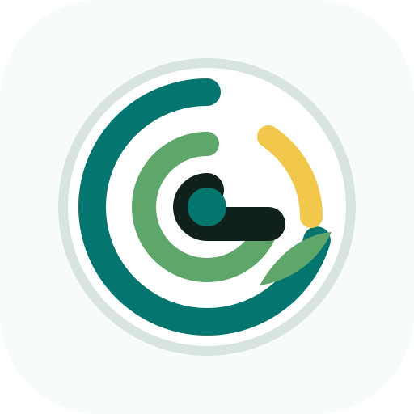
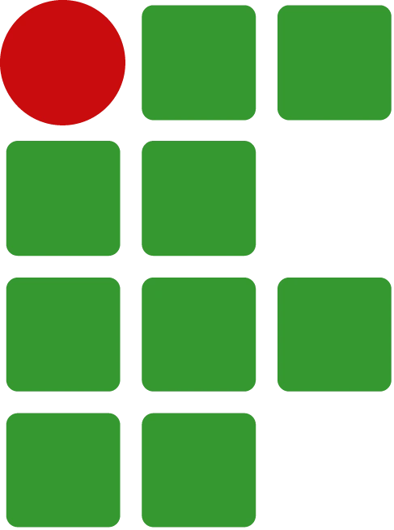

PEIs demorados
Elaboração depende de muitos documentos e pouco reaproveitamento de histórico.

PEI Inteligente ParceriasTecnologia para inclusão educacional
Do plano individualizado ao acompanhamento pedagógico, em uma rotina mais clara para professores, AEE e gestão.
Uma plataforma para estruturar PEIs, adaptar atividades, registrar evidências e apoiar decisões da equipe escolar sem substituir a validação humana.
Demonstração pública Teste nosso protótipoO desafio
Muitas escolas já sabem o que precisa ser feito, mas enfrentam processos manuais, registros espalhados e pouca visibilidade sobre a evolução do estudante. O resultado é uma rotina pesada para quem ensina e pouco rastreável para quem acompanha.
Elaboração depende de muitos documentos e pouco reaproveitamento de histórico.
Atividades, estratégias e evidências ficam fragmentadas entre pessoas e sistemas.
Coordenação, reitoria e secretarias têm dificuldade para enxergar demandas e avanços.
A solução
O PEI Inteligente organiza etapas, sugere caminhos pedagógicos e mantém a equipe no centro da decisão. A tecnologia acelera a rotina; a escola valida, contextualiza e acompanha.
Objetivos, barreiras, recursos, estratégias e acompanhamento em uma estrutura clara.
Adaptação de propostas pedagógicas para diferentes perfis, ritmos e necessidades.
Recomendações contextualizadas para apoiar professores sem automatizar decisões finais.
Registros de evolução, ajustes, evidências e observações mantidos em uma linha contínua.
Sínteses para conselhos, devolutivas, planejamento pedagógico e acompanhamento de rede.
Leitura de demandas, status dos planos e necessidades de apoio para gestores públicos.
Plataforma
A experiência foi pensada para o cotidiano escolar: rápida para professores, organizada para AEE e legível para coordenação e gestão.
Como funciona
A equipe registra perfil, necessidades, contexto escolar e barreiras de aprendizagem.
A plataforma estrutura objetivos, recursos, estratégias e propostas de adaptação.
Professores, AEE e coordenação revisam e ajustam cada decisão pedagógica.
A escola registra evidências, revê estratégias e mantém continuidade entre ciclos.
Impacto esperado
Menos tempo em tarefas repetitivas e mais clareza para adaptar atividades com intenção pedagógica.
Histórico unificado, decisões documentadas e reuniões com evidências mais organizadas.
Visão agregada para priorizar formação, apoiar escolas e monitorar a implementação da política inclusiva.
Responsabilidade
As sugestões precisam ser revisadas por profissionais que conhecem o estudante e o contexto.
Planos, adaptações e ajustes podem manter histórico para que a equipe entenda o que mudou.
A implantação pode vir acompanhada de orientação para uso pedagógico e institucional.
O projeto nasce preparado para diálogo com reitorias, SEDUCs e redes de ensino.
Instituições
O PEI Inteligente é proposto pelo IFG e se fortalece com instituições parceiras que aproximam pesquisa aplicada, formação docente e diálogo com redes públicas.
Responsável pela idealização, desenvolvimento e articulação institucional do projeto.

ApoioApoia a rede de colaboração, validação e aproximação com contextos educacionais reais.
Fortalece a dimensão multicampi e a construção coletiva da solução.
Equipe
A equipe combina pesquisa aplicada, inteligência artificial, educação inclusiva e articulação institucional para criar uma solução próxima da realidade das escolas.
Mestre em Educação pela UFOP, especialista em AEE e professora efetiva no IFMT.
Doutora em Ciências da Saúde pela UFG e Pró-reitora de Pesquisa e Pós-Graduação do IFG.
Doutorando em Matemática Aplicada pela UNICAMP e professor do IFG Campus Goiânia.
Doutor em Ciências da Computação pela UFG e professor do IFG.
Doutor em Engenharia Elétrica e de Computação pela UFG e pesquisador em IA.
Parcerias e pilotos
Entender fluxo atual de PEI, AEE, registros e necessidades da rede.
Aplicar com escolas selecionadas, acompanhando uso, dúvidas e ajustes.
Consolidar formação, indicadores e integração com a política institucional.
Vamos conversar
A equipe está aberta a diálogo com instituições, reitorias, secretarias de educação e parceiros públicos interessados em pilotos, validação e implantação.
Chamar pelo WhatsApp